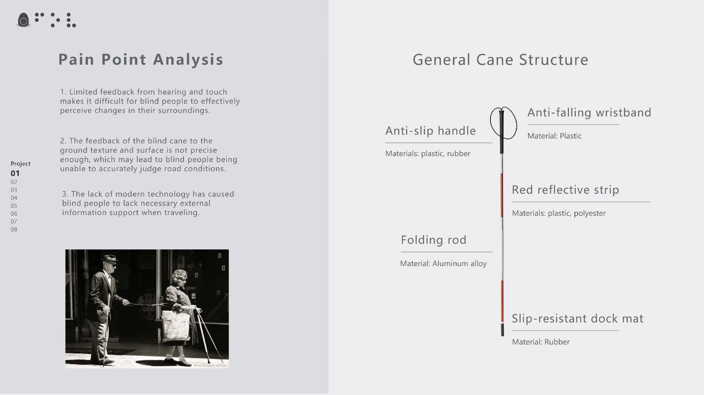
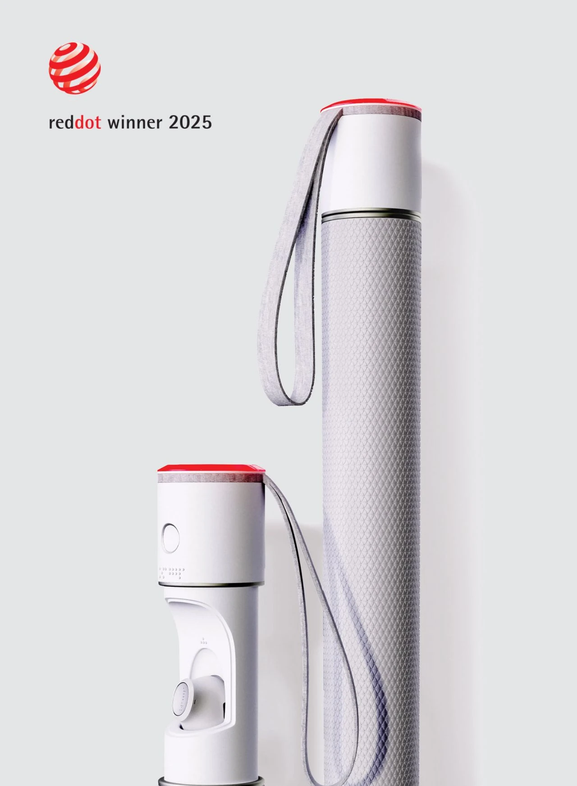
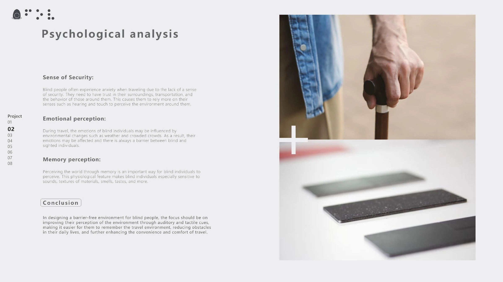
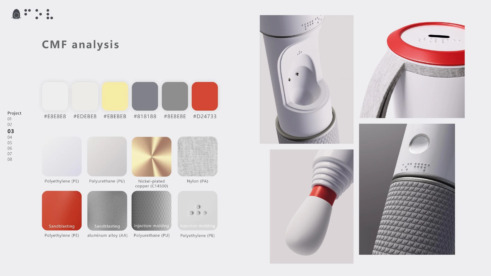
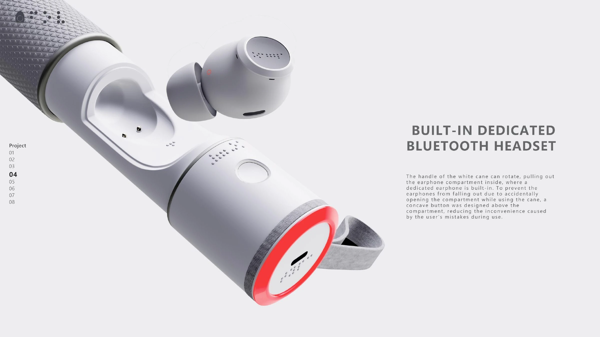
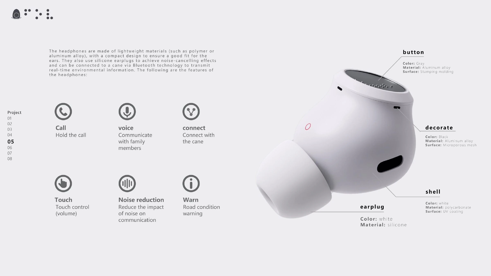
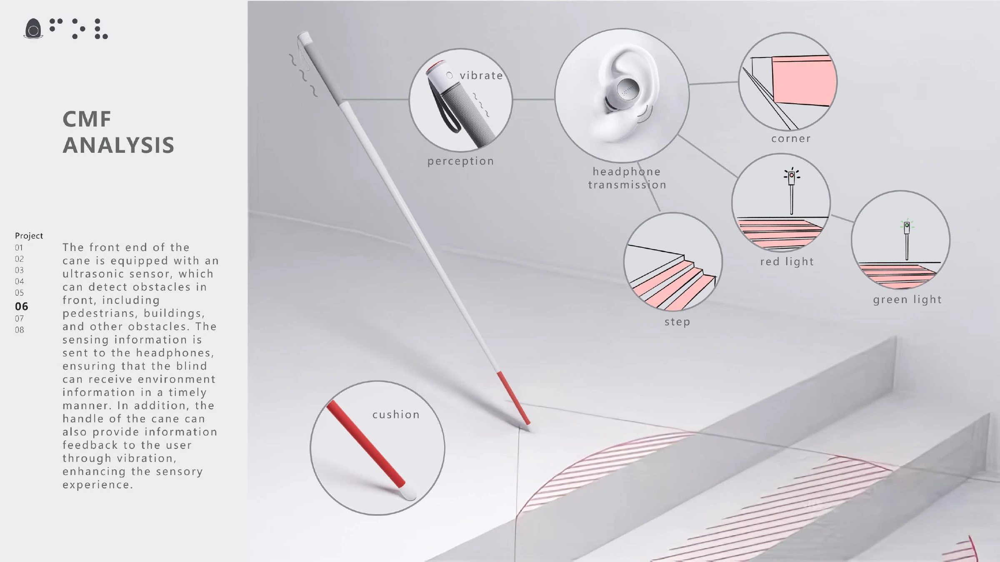
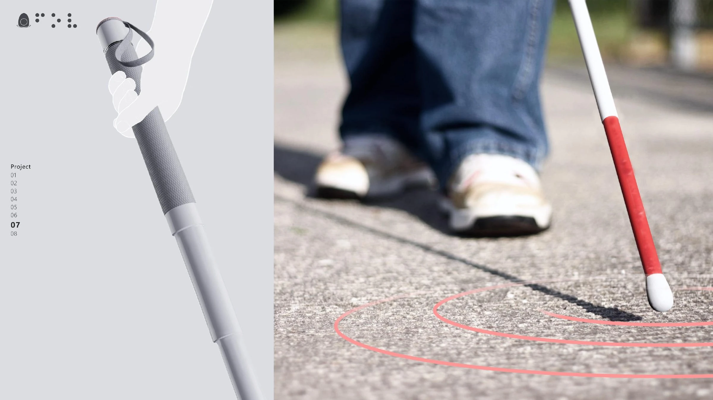
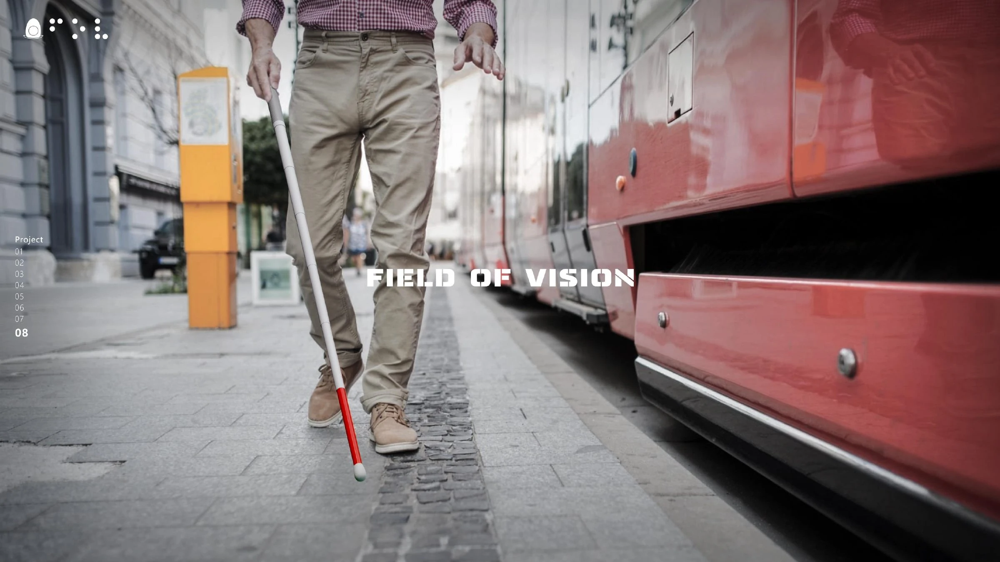

Research
Everyday mobility pain points define the need for clearer tactile feedback, safer orientation, and more legible product interaction.

Inclusive Product Design / Mobility / User Research
An inclusive mobility product concept designed to support orientation, confidence, and independence through tactile feedback, hazard awareness, and connected product features.

Case Study
Research



Product Features




Final Vision
